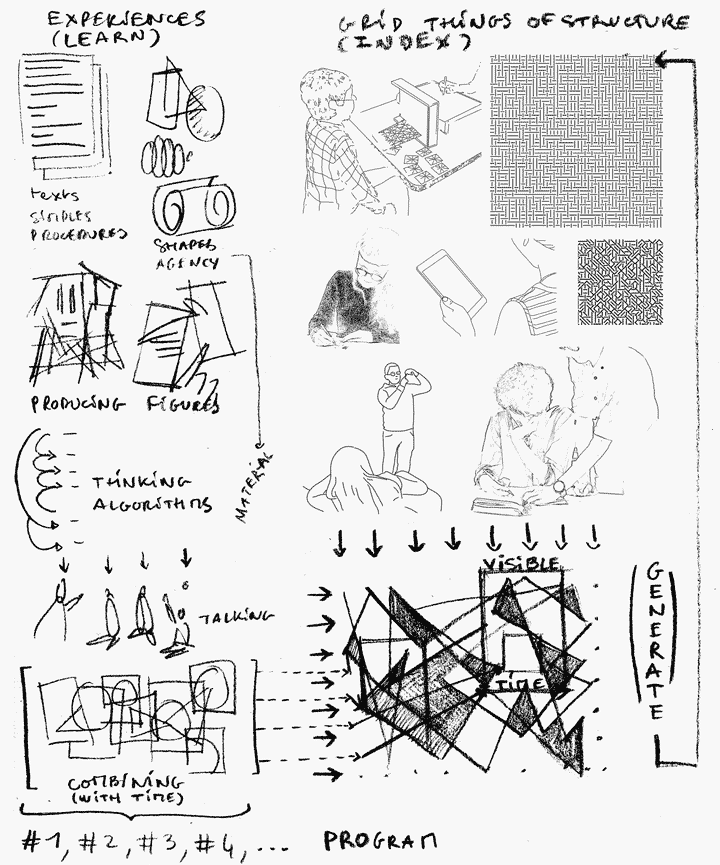
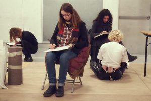
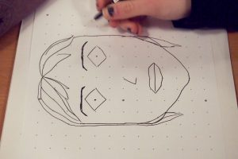
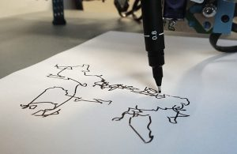

Gaëtan Robillard
Avec Marie-Lou Barbier, Valentin Dufois, Alexane Le Guern, Kenthyvong Tan,
Le laboratoire des Intuitions (ESAD TALM-Tours), et la formation ingénieur IMAC (ESIPE – UPEM)
–
Images génériques (./i) est un projet de création logicielle qui repose sur la mise en place d’un atelier ouvert à la transmission artistique dans un contexte de pratique algorithmique. Le logiciel de dessin procédural qui est présenté ici sert de terrain d’expérimentation pour créer une machine graphique et générative qui produit du sens à partir d’un processus participatif. A travers une expérience d’apprentissage telle que celle proposée, comment individus, algorithmes et langage artistique interagissent-ils ? Comment structurer un espace cognitif pour introduire ces rapports ? Peut on instruire une pratique artistique à un logiciel ou à un algorithme ? Une image générative est elle une image qui a appris l’art ?
Vidéo
   
Réflexions
Dans les années 60 et 70, le progrès scientifique et technologique annonce un changement d’ère et de modèle industriel ou culturel : du fordisme à la société de l’information, du modernisme d’après guerre à un art post moderne dématérialise [1]. Si une grande majorité du milieu intellectuel et artistique rejette alors l’effort technologique de l’époque, le mouvement New Tendencies qui émerge à Zagreb s’empare de cet essor rapide pour projeter un futur qui se serait libéré de l’aliénation et de l’oppression. Pour les NT, produire un art algorithmique (Computer art) et une recherche visuelle avec et par l’ordinateur, c’est finalement rendre visible des processus aperceptifs afin de donner à chacun la possibilité de négocier ce monde à venir.
De toute évidence, il est nécessaire d’investiguer aujourd’hui les suites d’une telle proposition. Le numérique est devenu un terme indissociable de toute activité sociale contemporaine. L’image est omniprésente et son caractère numérique affecte la globalité de notre monde. Les algorithmes refondent l’industrie et engendrent de nouvelles manières de gouverner: du techno-politique [2] à la “gouvernance algorithmique”. Dans les mathématiques, certains chercheurs s’inquiètent de la manière dont la technologie de l’intelligence artificielle en vient à “opacifier” les aspects les plus fondamentaux des théories scientifiques [3].
Dans un monde qui se compose désormais avec les algorithmes, doublé par la promesse d’une intelligence rendue computationnelle, il convient de se demander quelle place réserve-t-on à la construction du sujet (pour reprendre les termes de l’épistémologue Jean Piaget). L’art qui se conçoit avec les algorithmes se présente comme un terrain à investiguer pour penser un apprentissage qui parce qu’il doit être verbalisé (et formalisé) – entretiendrait une réflexion accrue sur la pratique artistique elle-même (en se référant à l’esthétique générative de Frieder Nake), et qui au-delà dans une visée émancipatrice induirait un éclairage sur les enjeux sociétaux, scientifiques et épistémologiques induits par l’environnement algorithmique dans lequel nous vivons aujourd’hui.
Notes
[1] Armin Medosch, New Tendencies : Art at the Threshold of the Information Revolution (1961 – 1978), MIT Press, Juin 2016
[2] Cf plateforme TECHNOPOLITICS : www.technopolitics.info
[3] Giuseppe Longo, “Intelligence artificielle, bêtise artificielle et fonction du calcul”, Entretiens du nouveau monde industriel, décembre 2018, Centre Pompidou, Paris
Atelier
Si les élèves utilisent quotidiennement des outils numériques, ils ont une relation « de façade » à ces matériels. Il s’agit donc à travers ce projet de les amener à passer de l’autre côté de l’écran, et à aborder les composants immatériels d’une image numérique, notamment le code informatique. Le choix opéré, de cibler le projet par rapport à des gestes graphiques liés au dessin (du feutre noir sur papier blanc au traçage mécanique effectué par une machine), a permis de questionner et de qualifier une pluralité de gestes liés à des pratiques du dessin. Les élèves ont aussi recours à un vocabulaire spécifique pour ausculter leurs dessins. Ils développent ainsi leur capacité à nommer des composants plastiques spécifiques.
Le développement du projet se décompose en plusieurs temps (dessiner, indexer, coder, générer, tracer, restituer) ce qui permet à chacun d’entrevoir l’ensemble d’un cheminement créatif, avec ses maîtrises, ses hasards et ses accidents ; et ce, jusqu’à la présentation du travail accompli.
Outils : ordinateurs portables, environnement Processing, traceurs Makeblock XY-Plotter Robot Kit V2.0, logiciel spécifique (./i) sur environnement Linux ou Mac, tables, chaises et mur d’affichage, consommables papiers et feutres noirs.
Crédits
Art et recherche visuelle : Gaëtan Robillard
Ingénierie créative : Marie-Lou Barbier, Valentin Dufois, Alexane Le Guern, Kenthyvong Tan
Collaboration pédagogique : Luce Mongo Mboussa
Coordination Dynamograma VII (lancement du projet) : Thierry Mouillé et David Zerbib
Soutiens
Laboratoire des Intuitions (ESAD TALM-Tours)
Formation IMAC (ESIPE – UPEM)
La Centrif’ (Campus numérique – UPEM)
Gaîté Lyrique – Paris
Lycée Colbert – Paris